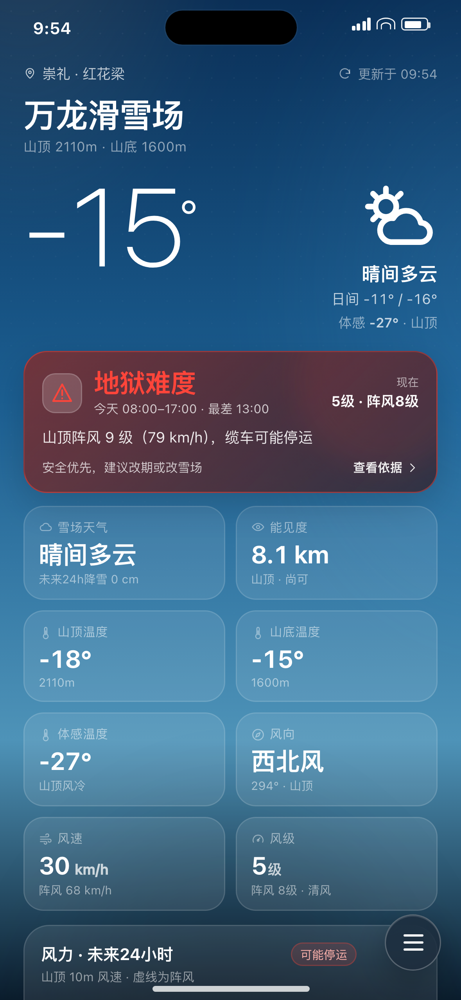
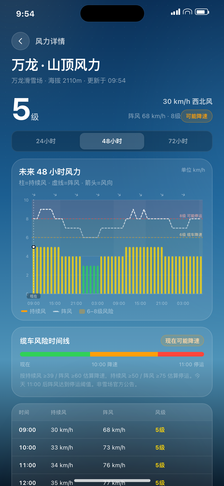
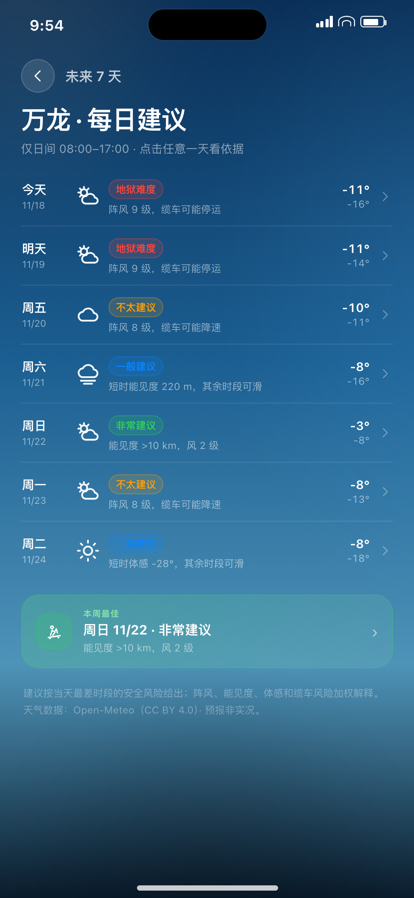
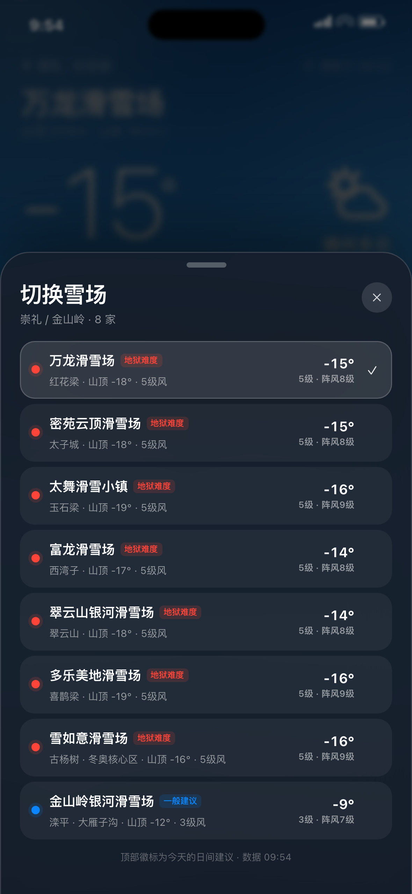
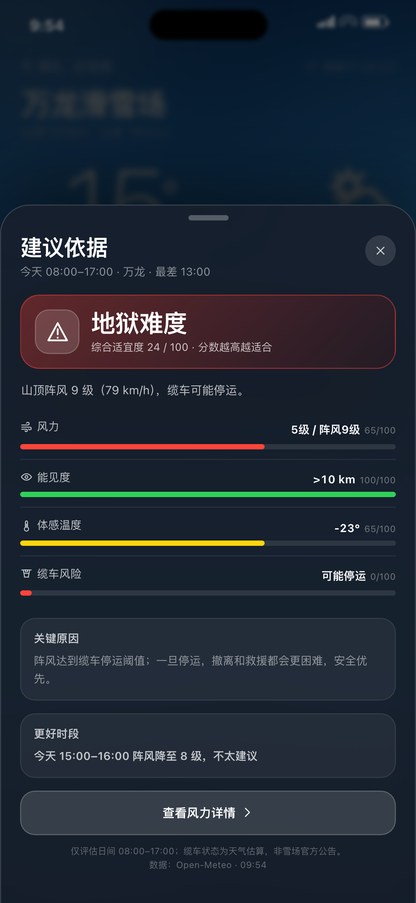
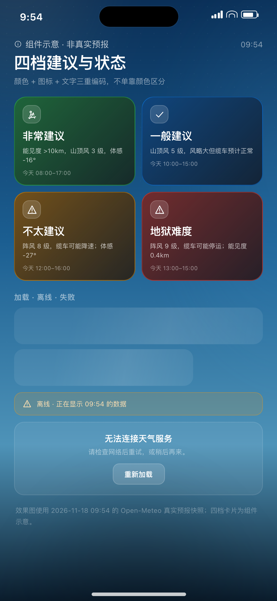

HUANJING SNOW · UI REVIEW
环京雪况 · 效果图 v1
8 家雪场 · 崇礼 / 金山岭
真实预报快照：2026-11-18 09:54（Open-Meteo）
8 家雪场：万龙、云顶、太舞、富龙、银河、多乐、雪如意、金山岭
暗色苹果天气风格 · 右下角三条横线切换雪场

01 · 首页
天气 + 建议 + 指标

02 · 风力详情
48h 小时图 + 缆车风险

03 · 未来 7 天
每日建议 + 本周最佳

04 · 切换雪场
右下角三条横线

05 · 建议依据
四因素 + 更好时段

06 · 状态与组件
四档 + 加载/离线/失败
首页完整长图见 screens/02-home-full.png
数据：Open-Meteo (CC BY 4.0) · 预报非实况 · 缆车风险为天气估算，以雪场公告为准